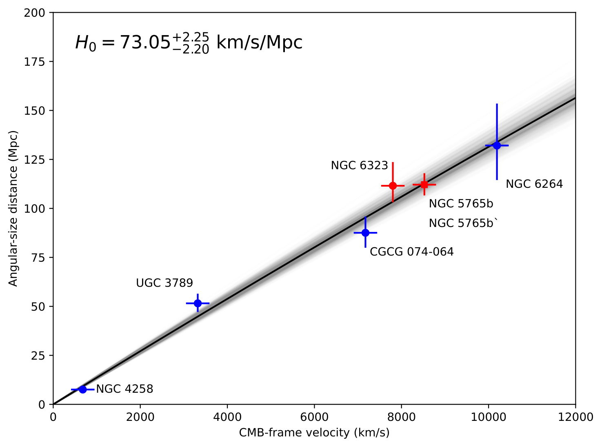
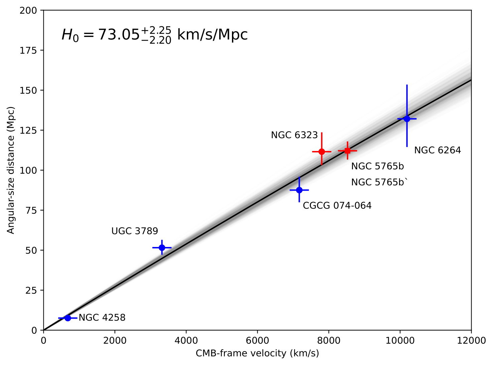

NATHAN C SHAW
Research Projects
Observing and Analyzing Exoplanet Transits for the TESS Follow-UP Observing Program
Truman State University Observational Astronomy Research Team (Kirksville, MO)
We observe candidate exoplanet transits using the National Undergraduate Research Observatory (NURO) telescopes in Flagstaff, AZ. Our analysis focuses on key transit data, including eclipse timing, depth, and duration. To ensure the reliability of our findings, we also investigate nearby stars for signs of variability that could indicate false transit detections from TESS. For this analysis, we utilize AstroImageJ, and subsequently upload our results to the ExoFOP database. So far, we have detected and analyzed 26 exoplanet transits, with 9 of those submitted to the Transiting Exoplanet Follow-up Observing Program (TFOP).
Mentor: Dr. Vayujeet Gokhale
The left image shows the NURO 42" telescope we've used for our observations in Flagstaff, Arizona. The middle plot shows the Nearby Eclipsing Binary (NEB) Analysis performed on all of the stars within a 2.5-arcsecond radius of the target. This uses Gaia data in addition to the light curves generated for each star to check if a transit-like signal is originating from any of them, resulting in a false-positive detection. The right panel shows a sample light curve from a TESS Object of Interest (TOI) where the flux of the star has been plotted along with many comparison stars outside of the 2.5-arcsecond radius to eliminate the possibility of weather (or other condition) related transit-like signals.
The Quest For 3%: Strategies to Improve H0 Precision with the Megamaser Cosmology Project
National Radio Astronomy Observatory REU (Charlottesville, VA)
The Megamaser Cosmology Project (MCP) aims to measure the Hubble Constant (H0) with high precision using water megamasers in the disks of nearby active galaxies. While the current measurement of H0 using this method is 73.9 ± 3.0 km s-1 Mpc-1, corresponding to an uncertainty of 4.06%, the MCP’s stated goal is an overall uncertainty of 3%. This study explores whether achieving that level of precision is feasible by using existing observational facilities. We investigate three approaches, each of which incorporates results alongside the original six galaxies used in the analysis by Pesce et al. (2020a). These approaches included: (1) refining the thin, warped disk fitting model for Markarian 1419, (2) independently adding a new galaxy for which we have data—IC 2560, ESO 558-G009, and J0437+2456, and (3) reobserving a galaxy used in the original analysis, specifically NGC 6323 and NGC 6264 for their high initial uncertainties, and NGC 5765b due to its exceptional precision. We found that the refined model for Markarian 1419 reduced the uncertainty to 3.99%, though a reduced χ2 ≫ 1 indicates a poor model fit, and further analysis is needed. The only meaningful reduction resulted from revisiting the galaxies used in Pesce et al. (2020a). Reobserving NGC 6323 to a 10% uncertainty in distance achieved a reduction in overall uncertainty to 3.57%, while including a new observation of NGC 5765b to the same precision as the original measurement led to the most substantial decrease, down to 3.24%. We project that combining these strategies—a new observation of NGC 5765b and achieving a 10% distance uncertainty for NGC 6323—could constrain H0 to 73.05+2.25−2.20 km s-1 Mpc-1, resulting in an overall uncertainty of 3.05%. This analysis demonstrates that the MCP is on course to meet its target of 3% precision, paving the way for future advancements with the next-generation Very Large Array (ngVLA) and the pursuit of a 1% measurement.
Mentor: Dr. James Braatz
 

The plot on the left illustrates the latest published values for the Hubble Constant obtained from various prediction and
measurement methodologies discussed in this paper. The top panel highlights two early-universe methods: the Planck
Collaboration (2020) and the DES-SN5YR + DESI-BAO approach from the Dark Energy Survey (DES Collaboration), with the published value reported in Camilleri et al. (2024). The bottom panel presents various late-universe
observational techniques: the SH0ES Collaboration (Cepheid distance ladder), the Carnegie-Chicago Hubble Program (CCHP,
Tip of the Red Giant Branch), Surface Brightness Fluctuations (SBF), Gravitationally Lensed Quasars (H0LiCOW), and
the H2O Megamaser Method (MCP). Finally, a weighted average calculation is presented, incorporating all the late-universe
methods listed above. You can find more using the link to my report below!
The plot on the right displays the combined results of incorporating a 10% distance uncertainty for NGC 6323, along with a
reobservation of NGC 5765b, labeled as NGC 5765b’ on a Hubble plot (distance vs. velocity). These galaxies were included in red alongside the original six from
the Pesce et al. (2020a) analysis. This scenario represents the optimal combination of our two most successful trials, yielding a Hubble
Constant of H0 = 73.05+2.25−2.20 km s-1 Mpc-1 and achieving an overall uncertainty of 3.05%.
Summer Report:
https://www.nrao.edu/students/2024/Reports/ShawNathan.pdf
AAS 245 iPoster:
Click here to view poster! (Chambliss Award Recipient)
Observing and Analyzing Exoplanet Transits for the TESS Follow-UP Observing Program
Truman State University Observational Astronomy Research Team (Kirksville, MO)
We observe candidate exoplanet transits using the National Undergraduate Research Observatory (NURO) telescopes in Flagstaff, AZ. Our analysis focuses on key transit data, including eclipse timing, depth, and duration. To ensure the reliability of our findings, we also investigate nearby stars for signs of variability that could indicate false transit detections from TESS. For this analysis, we utilize AstroImageJ, and subsequently upload our results to the ExoFOP database. So far, we have detected and analyzed 26 exoplanet transits, with 9 of those submitted to the Transiting Exoplanet Follow-up Observing Program (TFOP).
Mentor: Dr. Vayujeet Gokhale
The left image shows the NURO 42" telescope we've used for our observations in Flagstaff, Arizona. The middle plot shows the Nearby Eclipsing Binary (NEB) Analysis performed on all of the stars within a 2.5-arcsecond radius of the target. This uses Gaia data in addition to the light curves generated for each star to check if a transit-like signal is originating from any of them, resulting in a false-positive detection. The right panel shows a sample light curve from a TESS Object of Interest (TOI) where the flux of the star has been plotted along with many comparison stars outside of the 2.5-arcsecond radius to eliminate the possibility of weather (or other condition) related transit-like signals.
Bridging Science and Outreach: Using Unistellar eVscopes to Measure Exoplanets and Engage the Public in Research
Senior Thesis: Truman State University (Kirksville, MO)
Truman State University's astronomy group has six Unistellar eVscopes, used over the past few years to engage audiences and inspire awe at the wonders of the night sky. Beyond their affordability and portability, which make them ideal for outreach, these telescopes also hold promise for exoplanet research. This project explores the feasibility of using eVscopes for scientific measurements of known and candidate exoplanets, assessing their effectiveness for both public engagement and meaningful data collection. By combining outreach with hands-on research, we aim to demonstrate how eVscopes can deepen public involvement in astronomical science.
Mentor: Dr. Vayujeet Gokhale
The left graph shows a light curve we have gotten of Hat-P-32b at our observatory in Kirksville, Missouri. This object was analyzed entirely by the Unistellar team, but we hope to conduct our own observations in the next couple months. The right image shows our observatory sight from inside the dome of the telescope, looking out towards the sunset. In the upper-right corner, you can see the Unistellar eVscope.